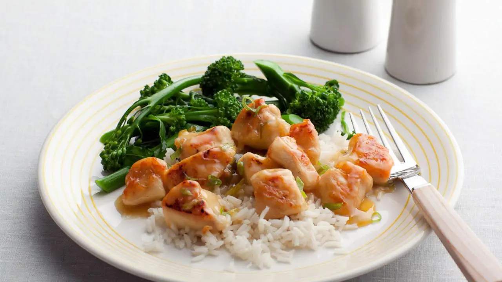

Source of Info
Lemon Chicken:

Ingredients:
- 1 1/2 pounds chicken breast or chickenh tenders, cut into chunks
- 1/4 cup all-purpose unbleached flour
- Coarse salt
-
2 tablespoons wok or vegetable oil, 2 turns of the pan (preferred brand: House of Tsang)
- 1 tablespoon (a splash) white or rice wine vinegar
- 1/2 cup chicken broth or stock
- 8 ounces (1 cup) prepared lemon curd
- 1/4 cup hot water
- 1 lemon, zested
- 2 scallions, thinly sliced or 20 blades fresh chives, finely chopped
How to make:
-
Coat the chunked chicken lightly in flour, seasoned with a little salt. Heat a large skillet or a
wok-shaped nonstick pan over high heat. Stir fry chicken until golden, 3 or 4 minutes. Remove
chicken from the pan and return pan to heat. Reduce heat to medium.
-
Add a splash of vinegar to the pan and let it evaporate. Add stock or broth to the pan and scrape up
any drippings with a whisk. Thin curd by stirring in a little hot water. Add curd to broth and whisk
to combine. Add chicken back to the pan and simmer for 1 to 2 minutes to thicken sauce and finish
cooking chicken pieces through. Remove the pan from heat, add the scallions or chives and zest, and
toss chicken pieces well to combine zest and scallions or chives evenly throughout the sauce.